Практика 1.2. Настройка БД, SQLModel и миграции через Alembic
Ход работы
1.Устанавливаем SQLModel
pip install sqlmodel
pip install psycopg2-binary
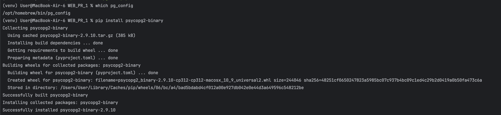
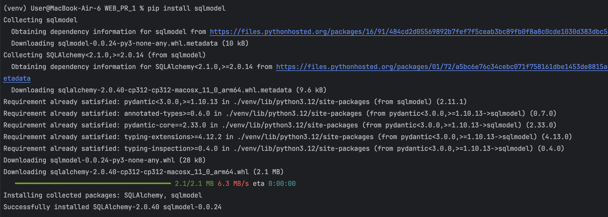
2.После установки всех зависимостей создаем файл с реализацией подключения к БД:
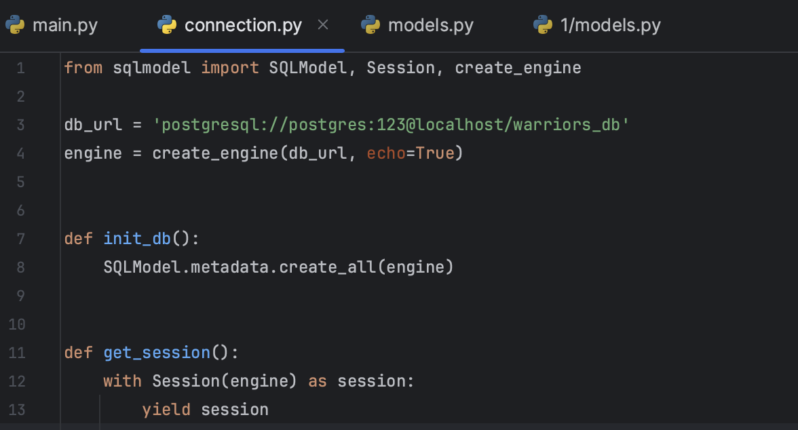
3.Не забывыаем про созданием самих моделей:
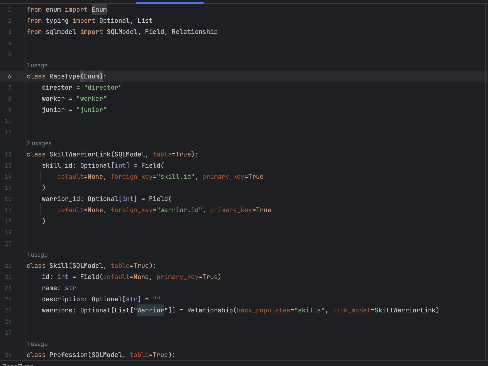
4.Редактируем main.py, добавив этот код для инициализации БД:
@app.on_event("startup")
def on_startup():
init_db()
Смотрим на результат. После запуска приложения в консоли выведется SQL-запрос на создание сущностей, описанных в models.py
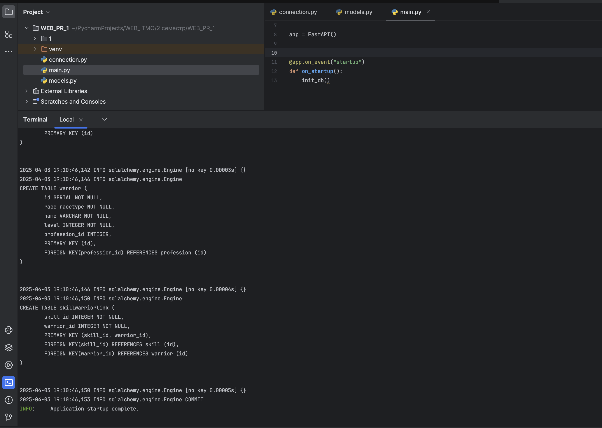
Также зайдем в PostgreSQL и посомтрим на созданные базы данных:
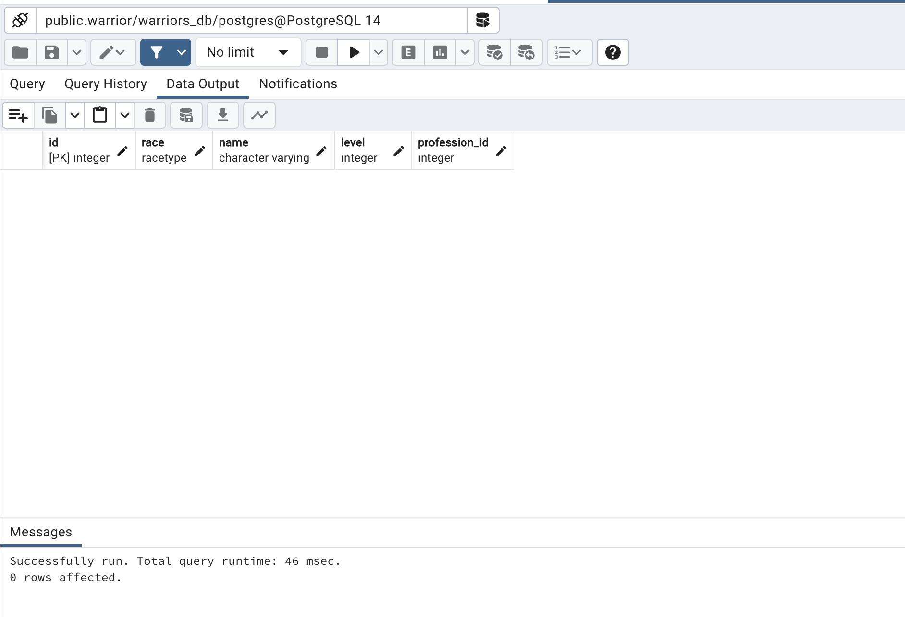
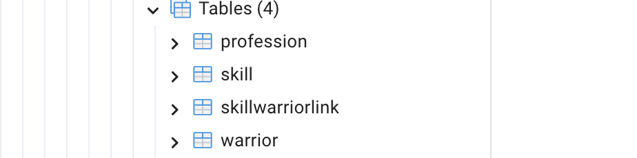
4.Напишем теперь запросы:
@app.get("/warriors_list")
def warriors_list(session=Depends(get_session)) -> List[Warrior]:
return session.exec(select(Warrior)).all()
@app.get("/warrior/{warrior_id}", response_model=WarriorProfessions)
def warriors_get(warrior_id: int, session=Depends(get_session)) -> Warrior:
warrior = session.get(Warrior, warrior_id)
return warrior
@app.patch("/warrior{warrior_id}")
def warrior_update(warrior_id: int, warrior: WarriorDefault, session=Depends(get_session)) -> WarriorDefault:
db_warrior = session.get(Warrior, warrior_id)
if not db_warrior:
raise HTTPException(status_code=404, detail="Warrior not found")
warrior_data = warrior.model_dump(exclude_unset=True)
for key, value in warrior_data.items():
setattr(db_warrior, key, value)
session.add(db_warrior)
session.commit()
session.refresh(db_warrior)
return db_warrior
@app.get("/professions_list")
def professions_list(session=Depends(get_session)) -> List[Profession]:
return session.exec(select(Profession)).all()
@app.get("/profession/{profession_id}")
def profession_get(profession_id: int, session=Depends(get_session)) -> Profession:
return session.get(Profession, profession_id)
И протестируем их:
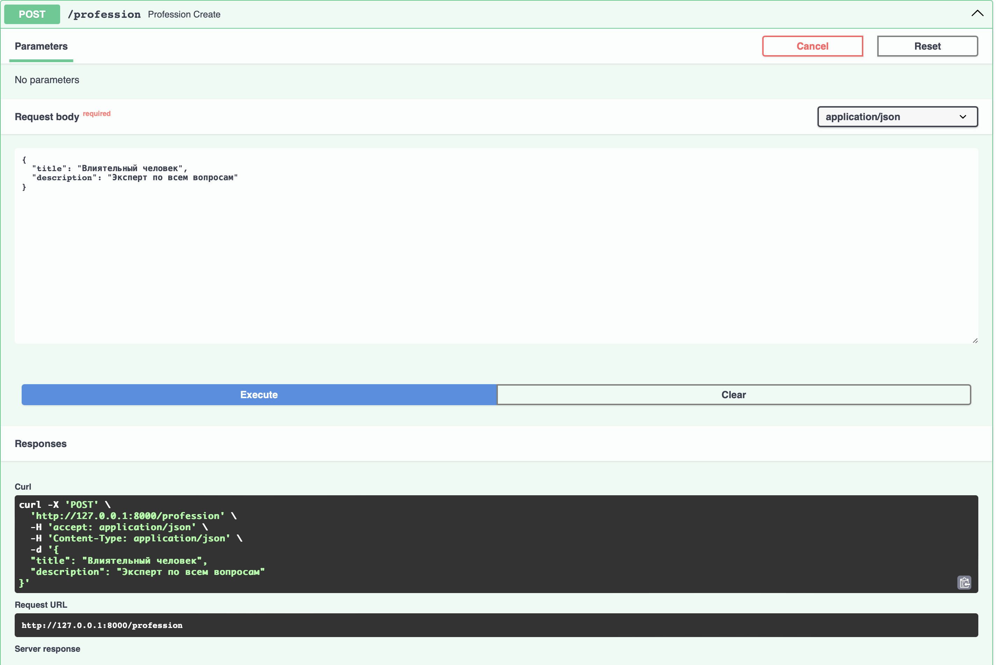
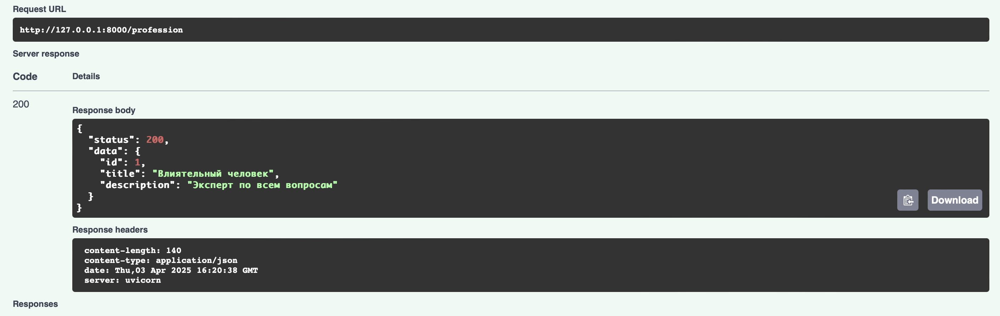
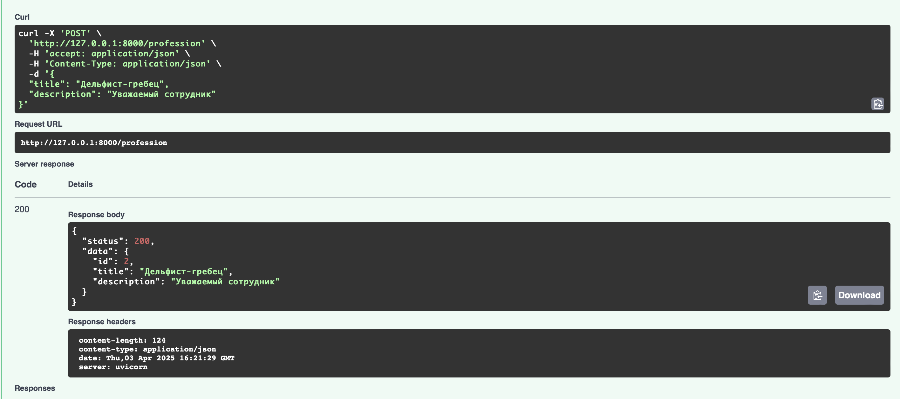
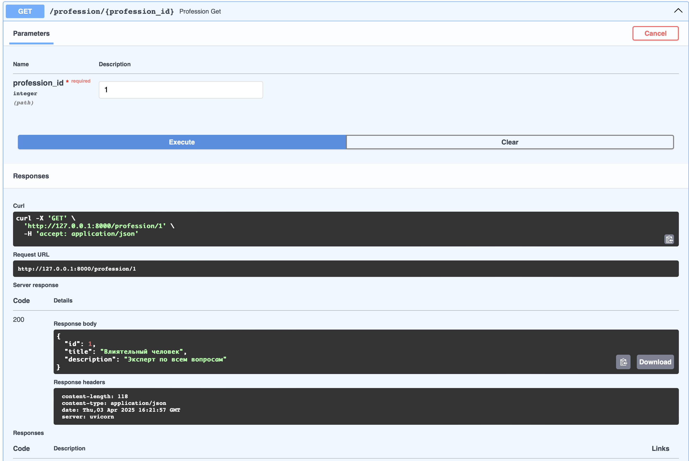
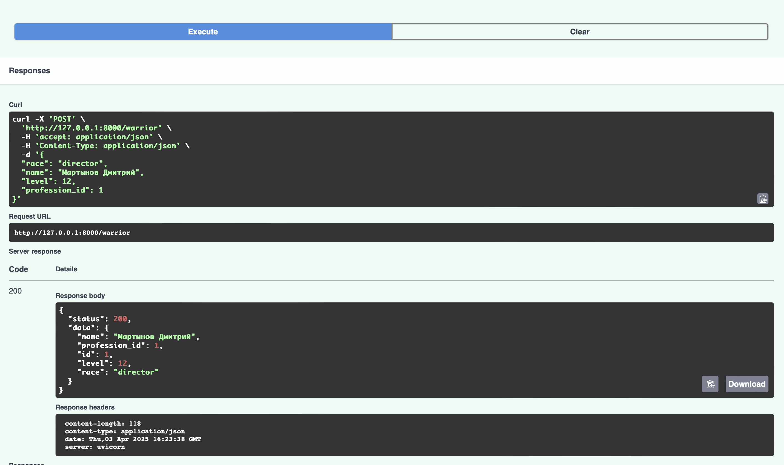
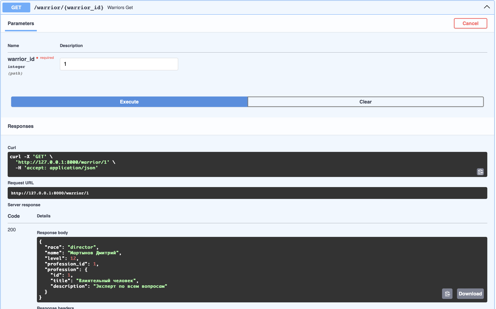
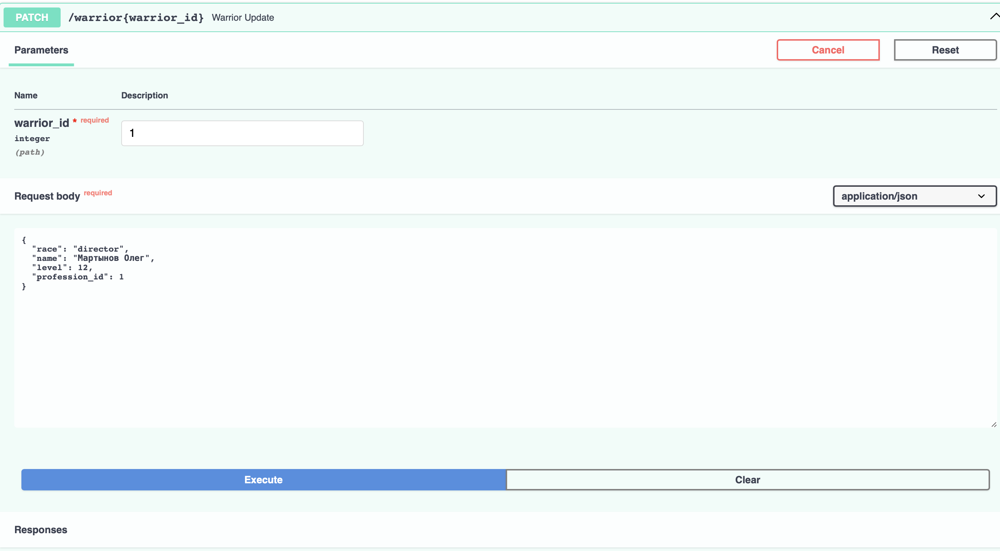
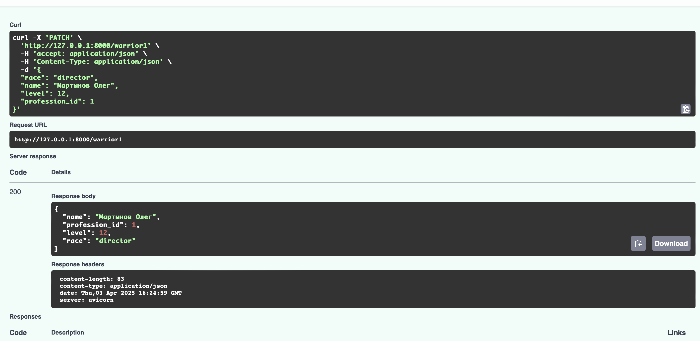
В качестве проверки вновь зайдем в PostgreSQl м проверим одну из таблиц:
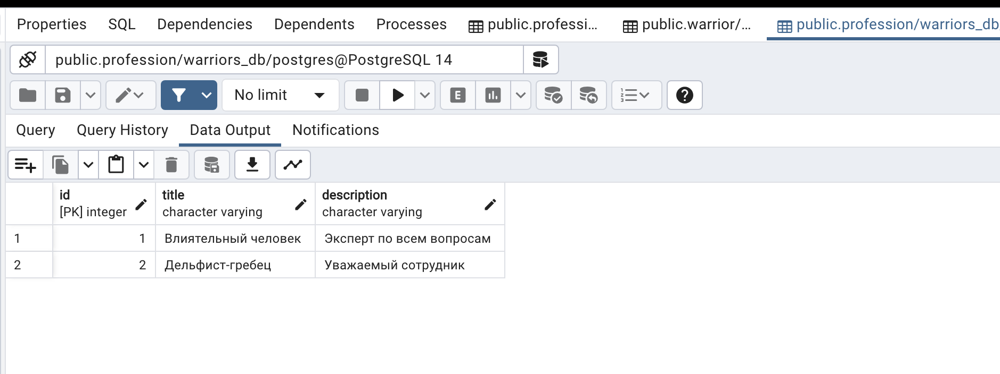